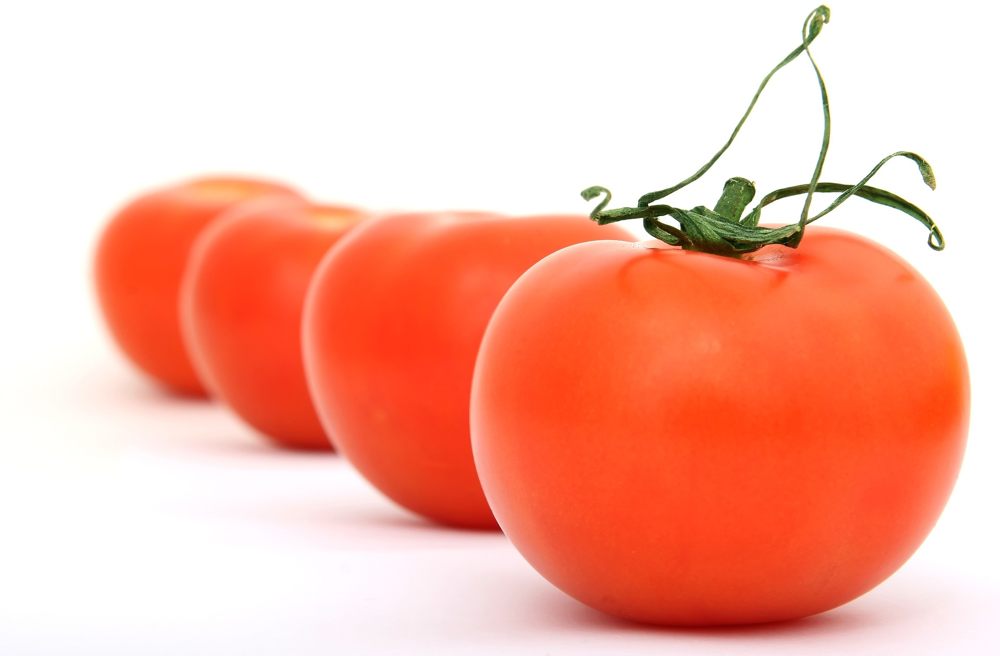

How to eat a tomato deliciously

I wanted to eat freshly picked tomatoes, so I took a trip to a nearby tomato farm. The ripened tomatoes were fresh and cheap.
How to pick a fresh tomato
A fresh tomato has a green and rigid pedicel. Color of the wall should be red, firm to touch, and round in shape. Sweeter tomato will sink in water and can be distinguished easily. However, sweeter does not mean it is good.
How to eat a tomato deliciously
Usually it is best to wash in fresh water and eat immediately. On a hot weather, eating a delicious tomato brings joy and it can also hydrate your body.
One can enjoy it better by sprinkling a choice of salt, sugar, mayonnaise, or olive oil.


Feature Story
Recommend Story
-
 First steps to arranging flowers
First steps to arranging flowers -
 When old smartphone was charged
When old smartphone was charged